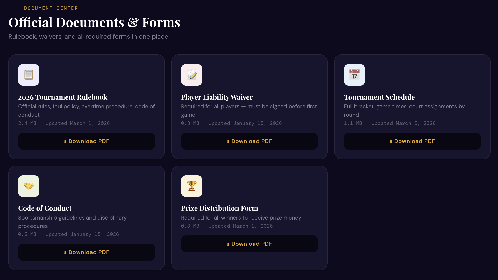

Why it exists
SACC Hoops gives the St. Alphonsa Syro-Malabar Forane Catholic Church’s yearly basketball tournament the feel of a real sports broadcast. Scores and player stats used to live on paper sheets and in scattered group chats. I built one home for it, where every player and fan can follow live updates, dig into stats and make predictions from their phone.
It covers the whole tournament. It starts with registration and payment for players, moves to a live draft for team captains, and once games begin it turns into a real-time leaderboard.

Snake draft board 
Stat leaderboards 
Team pages 
Power rankings 
Schedule 
AI commissioner chat 
Documentation and architecture
Everything it does
- Live score tickerScrolls across the top of every page with live and recent scores, updated through Supabase Realtime.
- Playoff bracketAdvances itself and shows live game status as the admin enters scores.
- Team pagesRosters, per-player stats, team colors and records. Captains manage their own roster.
- Fantasy pointsPTS + 1.2 REB + 1.5 AST + 3 STL + 3 BLK minus turnovers, ranking every player in the tournament.
- Stat leaderboardsSortable tables for fantasy points, points, rebounds, assists and steals. Click any column to re-sort.
- Player profilesRadar charts and stat bars in Recharts for every player.
- Power rankingsWeekly rankings with up, down and same arrows to show momentum.
- Pick’em predictionsFans pick upcoming games and see live pick percentages, with no login, tracked by an anonymous browser session.
- MVP votingOne anonymous vote per session, with results updating live.
- Snake draft boardA pick timer and live roster updates for captains choosing players.
- Online registrationPlayer sign-up with Zelle payment and waiver tracking that feeds the admin panel.
- Admin panelGames, players, teams and commissioner announcements from one dashboard.
- Player and team of the weekSpotlights on the home page for the best performances of the last round.
- Game scheduleCourts, tip-off times, rounds and live status for every game.
- GroupMe syncCommissioner announcements reach the group chat the community already uses.
- Mobile firstA bottom navigation bar, built to be opened on a phone during games.
What worked and what broke
The core features were a big win, especially the real-time voting and the snake draft board. Getting a web app to update instantly on many devices without anyone refreshing was a major technical step for me. I also built a way to recognize a device so polls allow one vote each and predictions stay anonymous, which makes the site feel interactive and professional.
Not everything went right. During the live draft I learned how differently devices keep time. My first draft timer ran on each captain’s phone, and because some phones were faster than others the clocks drifted apart. Some screens showed ten seconds left when there were really two. I rewrote it so one master clock in the database controls every screen.
ECE skills I gained
This project grew my software engineering a lot. I learned to build an interactive front end in React and to manage real-time data flowing between a website and a cloud database. Securing that data and managing different levels of access gave me a much better picture of how professional web apps are put together, and those are the interfaces modern hardware needs.
Next comes hardware. Connecting the site to a physical scoreboard will teach me to use a microcontroller as the bridge between code and electronics, handle serial communication, send the right pulses to light the display, and manage power and signal integrity so the board updates reliably.
Next steps
The most exciting step is the physical scoreboard. I have an electronic scoreboard and I am working out the best way to connect it. When an official updates a score on the website, the board on the scorer’s table should change instantly. The plan is an ESP32 that catches the update from the internet and flips the digits.
I also want the site to do more on its own. Right now I seed the playoff bracket by hand. I plan to write an algorithm that looks at every regular-season result and seeds the teams automatically, which takes human error out and makes the tournament run more like a real league.